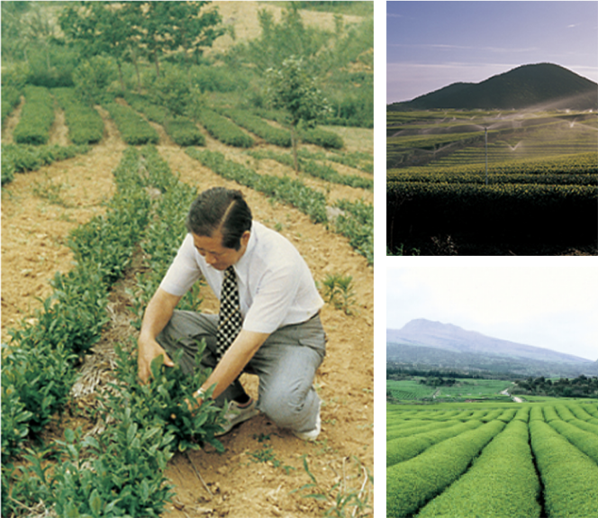
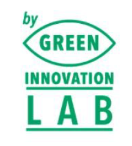

我們的綠茶研究始於1979年，堅信綠茶擁有無限可能性。每棵綠茶樹的生長需要5年的時間，經過約40年間的各種實驗，我們在3,310多種綠茶中，研發出世界上唯一的“專為肌膚設計的綠茶品種”，它可以承受包括氣候和害蟲在內的各種不利條件，並發揮最佳功效，只用於肌膚保 濕成分的濟州美肌綠茶™
Begin with GREEN TEA
一切都從「綠茶」開始
‘Green Tea’the Origin of INNISFREE
濟州島，有著自然的環境和驚人的生命力。土、光、水、風、霧和諧結合的綠色茶園，是INNISFREE的起點。創始人的執著的開拓精神，親手開墾佈滿石頭和荊棘的荒地，將其改造成肥沃的茶園，成為INNISFREE“為健康肌膚不斷挑戰和研究”的根基，可以說“綠茶”已成為INNISFREE的代表成分。

Farm to Face Beauty Green Tea™ INNISFREE
Green Innovation Lab™
Green Innovation Lab綠色創新實驗室於2021年5月1日正式啟用！
一個專門針對成分研究的機構，為實現並進化自然主義，不斷深入地探索、
實測和自我挑戰。 INNISFREE致力於從原料、配方到包裝，
打造“低刺激性和高效能”的產品並兼顧環保概念。

了解更多
含有INNISFREE特色綠茶成份的代表產品
>>
More INNISFREE…